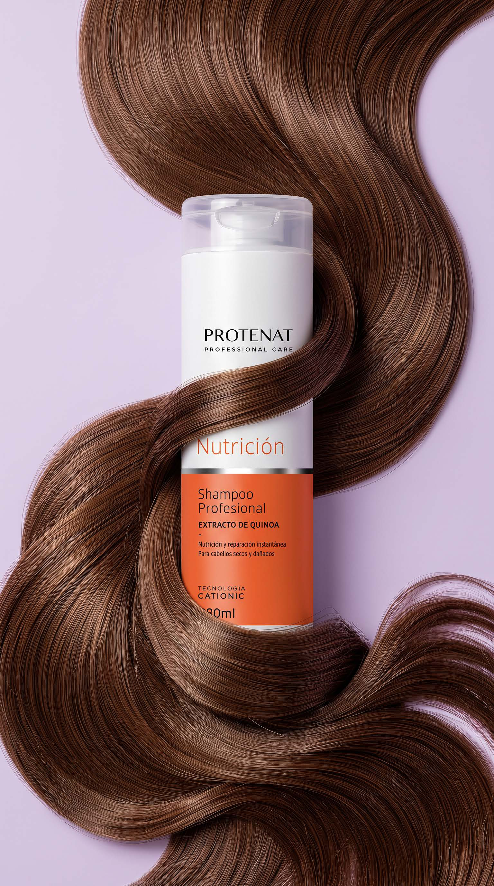
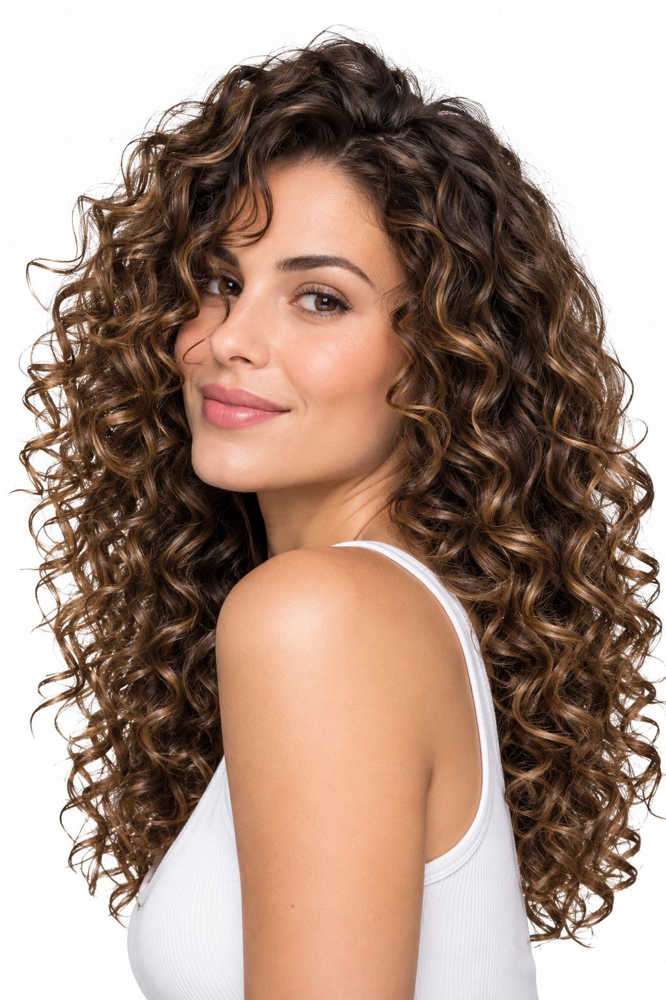
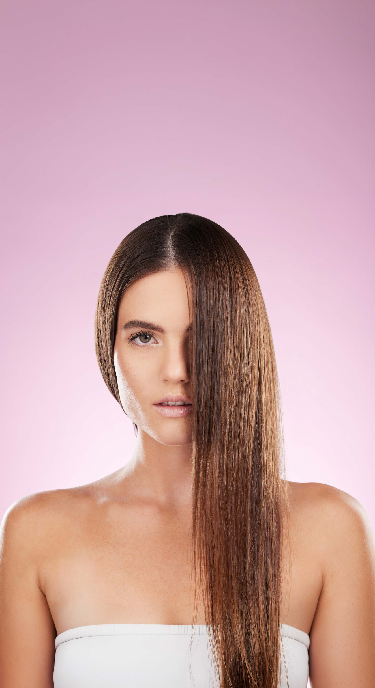
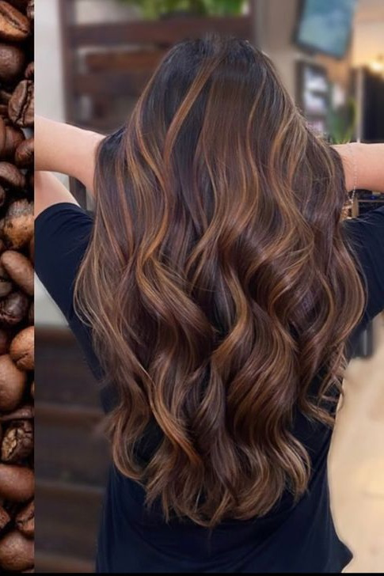
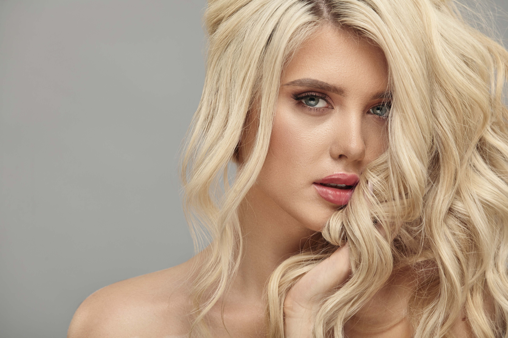
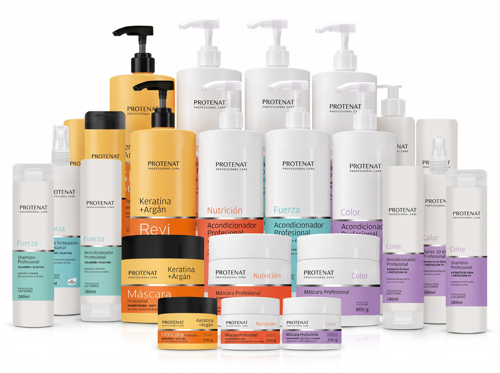
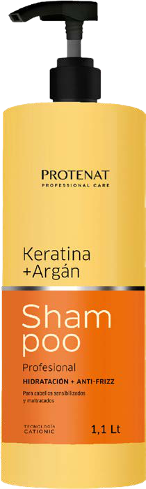
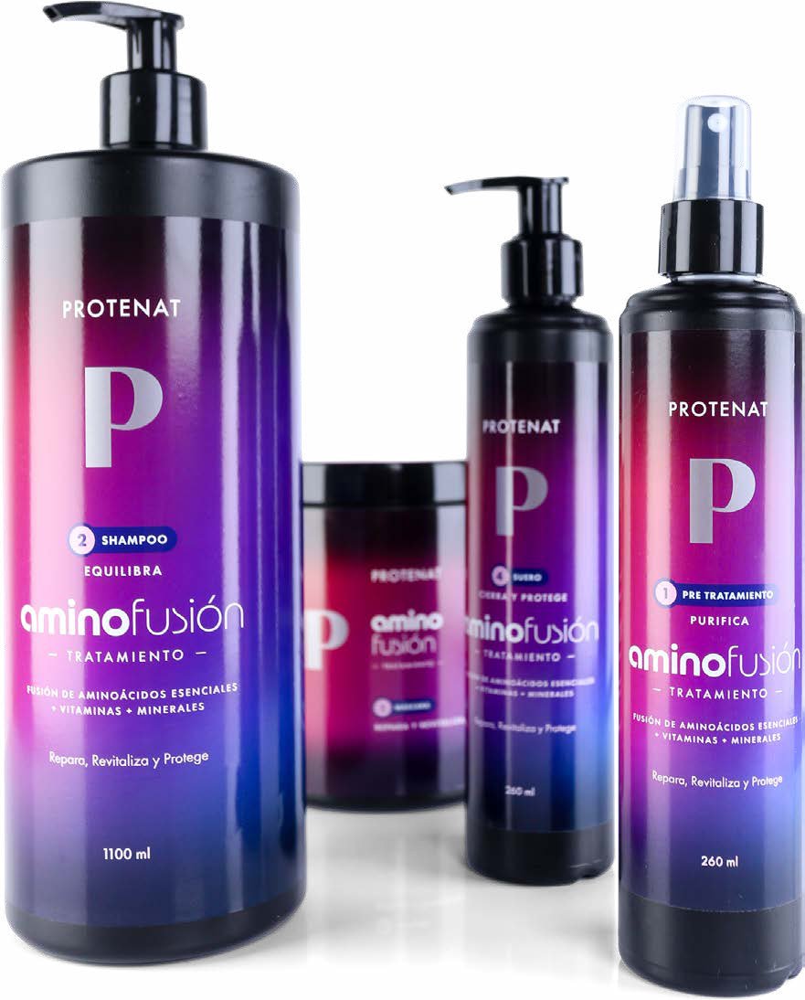
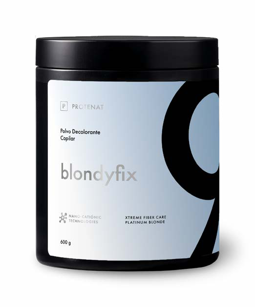

PROTENAT
PROFESSIONAL CARE
LÍNEA
CUIDADOS

Para el salón y para casa.
COLOR · COLOR · COLOR · COLOR · COLOR ·
COLOR · COLOR · COLOR · COLOR · COLOR ·
Color

Extracto de soja + filtro UV
Protege el color y el brillo
NUTRICIÓN · NUTRICIÓN · NUTRICIÓN · NUTRICIÓN ·
NUTRICIÓN · NUTRICIÓN · NUTRICIÓN · NUTRICIÓN ·
Nutrición

Extracto de quinoa
Para cabellos secos y dañados
FUERZA · FUERZA · FUERZA · FUERZA · FUERZA ·
FUERZA · FUERZA · FUERZA · FUERZA · FUERZA ·
Fuerza

Colágeno + elastina
Engrosa y fortalece
KERATINA · ARGÁN · KERATINA · ARGÁN · KERATINA ·
KERATINA · ARGÁN · KERATINA · ARGÁN · KERATINA ·
Keratina & Argán

Hidratación + antifrizz
Para cabellos maltratados
LÍNEA
aminofusión

Aminoácidos esenciales
+ vitaminas + minerales
+ vitaminas + minerales
1
PURIFICA
PRE-TRATAMIENTO
2
EQUILIBRA
SHAMPOO
3
REPARA Y
REVITALIZA
REVITALIZA
MÁSCARA
4
CIERRA Y
PROTEGE
PROTEGE
SUERO

ACLARA HASTA
1
NIVELES

BLONDIFIX
LÍNEA
Styling
Moldea, protege y perfecciona cada estilo.
LÍNEA
Bio Q
Después del alisado: el lacio dura más.
LÍNEA
Salón
Hecha para el trabajo profesional de todos los días.
PROTENAT
PROFESSIONAL CARE
www.protenat.com.ar